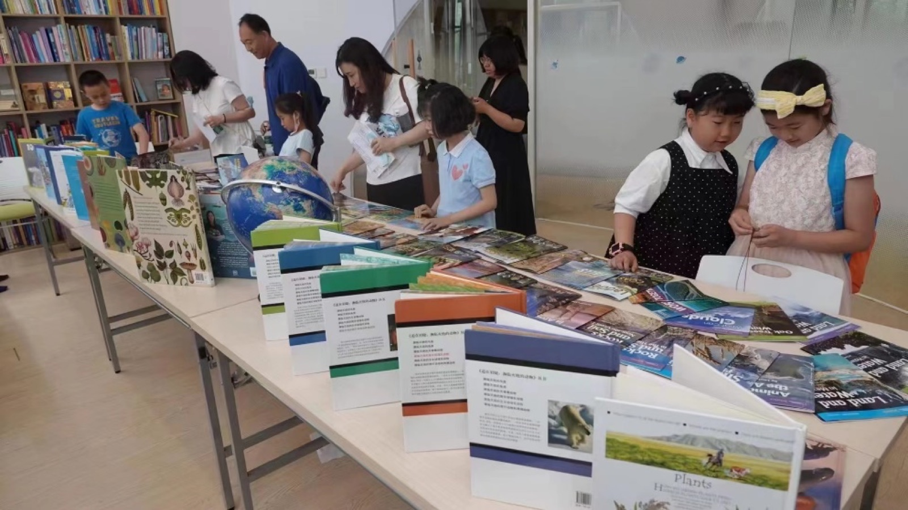
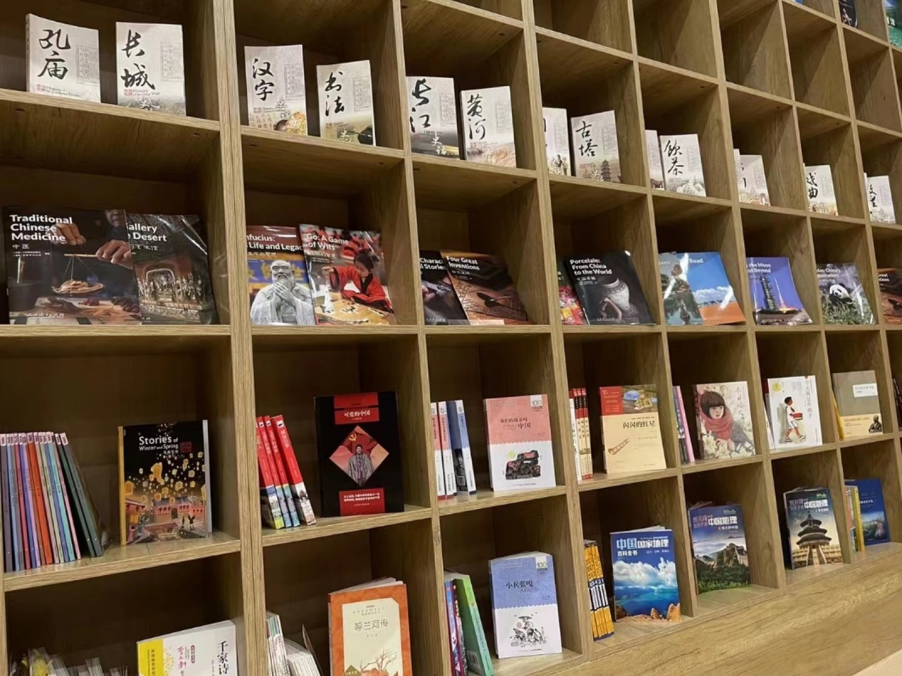
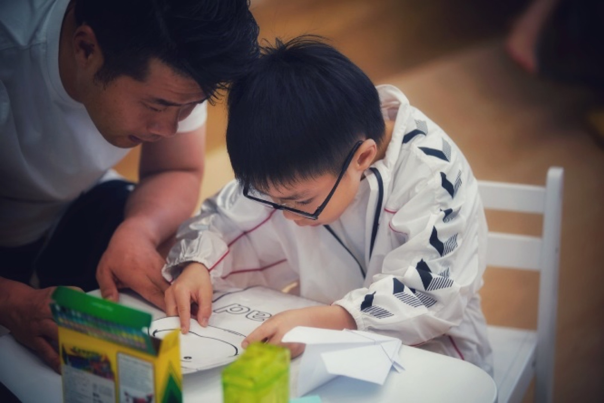
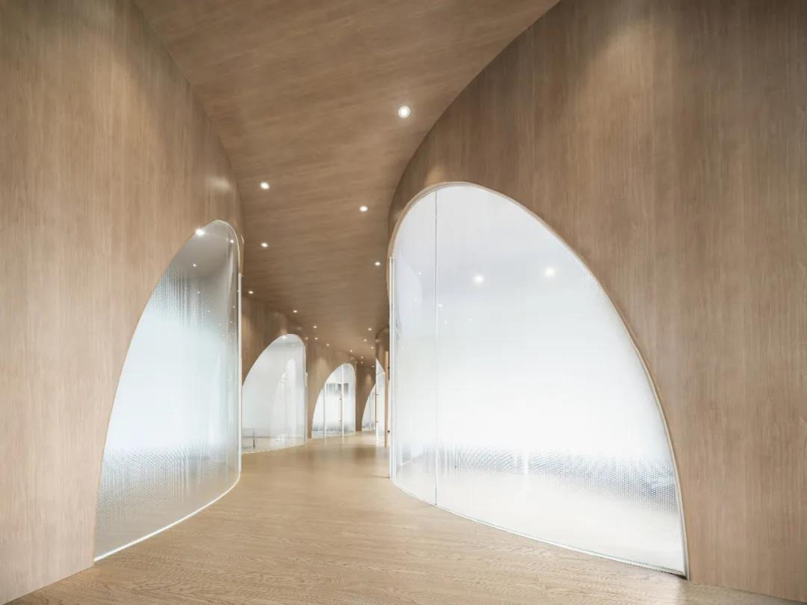

01
选择
找到合适的读物，孩子才会想读。慕识为每个孩子匹配与其兴趣和语言发展水平相符的书。
Reading Workshop
阅读工坊（Reading Workshop）来自教育学与心理学，是西方国家阅读课中常见的学习形式。 读者以自己的选择来阅读，以自己的速度来阅读，并与人讨论、分享阅读心得， 聚焦一些阅读能力或者重要概念的培养。
Key Features
选择、时间、反应、合作、指导与评估——每一节课都围绕这五件事设计。
01
找到合适的读物，孩子才会想读。慕识为每个孩子匹配与其兴趣和语言发展水平相符的书。
02
课堂里有真正属于自己的阅读时间，也有让人忍不住读完的停不下来。
03
读完之后要有回应：说、写、演、画，用自己的方式把理解表达出来。
04
与伙伴讨论、辩论、互相提问，接受“同一本书可以有不同解释”。
05
导师以提问和讨论推进课堂，启发高阶思维问题；每一次观察与作品都进入孩子的成长档案， 成为下一步教学的依据。
Four Modes
同一个孩子，在不同阶段需要不同的“陪读关系”。四个人、四种距离，最终走向独立。
从声音进入故事。孩子不必认识每个词，也能理解情节、享受语言。
导师示范并带着孩子使用策略：预测、推断、区分整体与细节、回顾前文。
和同伴一起讨论同一本书，说出想法、听见不同，把理解变得更清楚。
独自选书、独自读完，在“稍有挑战但不挫败”的难度里获得成就感。
Differentiated
虽然我不认为所有孩子都有成为天才的可能，但是每个孩子都有自己的长项， 我们应该挖掘他们的长项并加以鼓励和培养。
— Howard Gardner，哈佛大学发展心理学家一本书的知识并不局限于某一个领域。同一主题，每个人可以寻找自己的兴趣点， 在学科内部建立“大对话”。
VAK 教学充分融入课堂：孩子有大量机会参加小组讨论、展示、活动和游戏， 调动多种感官协同学习。
例如《三只小猪的真实故事》——同一件事，换一个叙述者，结论可能完全不同。 阅读的终极目标是获取信息，语言是内容的载体。
好的导师能够就一个概念打开多扇窗户；值得教给学生的内容也可以通过多种方式切入。
Programs
以英语阅读工坊为主线，向外延伸到科学阅读、假期营队与编程思维。


依托美国国家地理学习系列 1000 余册读物，遵循丛书原生分级逻辑， 把 7 个子系列与 3–18 岁读者的认知水平精准匹配，形成完整的进阶链路。

从《美国国家地理》馆藏主题出发，围绕地理、生物、物理与生态做项目化阅读； 英文烘焙营、三十国环球阅读之旅、AI 设计课，让书本走到真实世界。

编程启蒙课（6–10 岁，ScratchJr / Scratch）、编程应用课（9–18 岁，Python）、 编程算法课（11–18 岁，C++ 与数据结构）、编程趣味课（主题课程、比赛训练营）。
National Geographic Learning
美国国家地理学习系列本身具备科学的原生分级体系。我们结合丛书设计逻辑与儿童成长规律， 确保阅读难度、知识深度与认知水平同频进阶——既避免“跟不上”，也避免“吃不饱”。
| 年龄段 | 子系列 | 重点 |
|---|---|---|
| 3–6 岁 幼童阶段 |
Read on your own 自然拼读系列 | 高频词 + 实景图 + 词句拼读。在“听音能拼、见字会读”的同时，建立自然事物与语言表达的关联。 |
| 6–9 岁 低学龄阶段 |
Become an expert 小专家阅读系列 | 地球科学、生命科学与物理科学的 18 个基础话题，以 3 个难度梯度形成知识迁移路径。 |
| Explore on your own 自我探索阅读系列 | 与“小专家”形成“知识互补—实践拓展”搭配，支持多场景的项目化阅读活动。 | |
| World Windows 世界之窗阅读系列 | 科学与社会学交叉视角：物质与感官、力与运动、动植物、气候等，强化文本结构意识。 | |
| 10–15 岁 中学龄阶段 |
Explorer 探索阅读系列 | 精选《美国国家地理》经典科学文章，每主题分 Pioneer / Pathfinder 两种语言难度。 |
| Ladders 阶梯阅读系列（低阶版） | 按 3–4 个难度层级匹配不同蓝思值，针对同一话题展开群文阅读训练。 | |
| 16–18 岁 高中学龄阶段 |
Ladders 阶梯阅读系列（高阶版） | 深度科学主题，强化学术词汇与论证逻辑理解。 |
| Footprint 足迹系列 | 每册一个国家 / 地区的文化足迹，8 个难度层级，科幻短篇演绎 + 科学报告分析。 |
为什么选美国国家地理学习系列？权威专业、体系完善；内容鲜活、视觉赋能； 分级精准、适配成长——从微观细胞到宏观宇宙，让孩子直观感受自然之美。
Learning Loop
让孩子所学的词汇与阅读技巧真正转化为应用能力，告别“背了不用、读了不会”。
优质原版语料与音频：记叙、说明、应用等多元体裁，在持续阅读中完成课外阅读量目标。
策略训练与讨论：略读、精读、推理判断；用上下文理解词义，用自己的话释义。
仿写、续写与原创：从完整句到段落，再到多段论证与口头展示。
导师按量表点评，孩子根据反馈修订——修订能力本身就是重要证据。